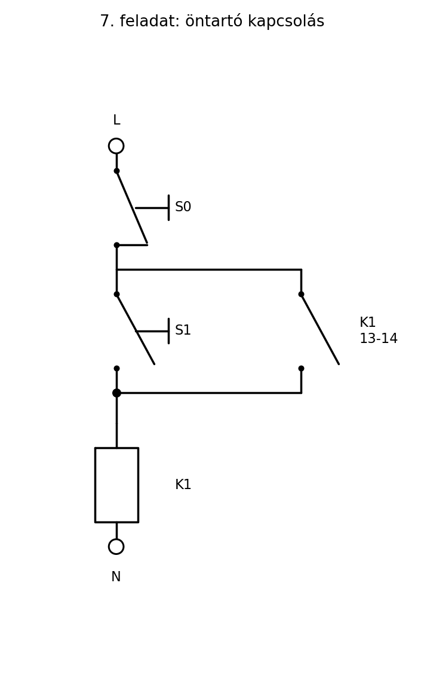
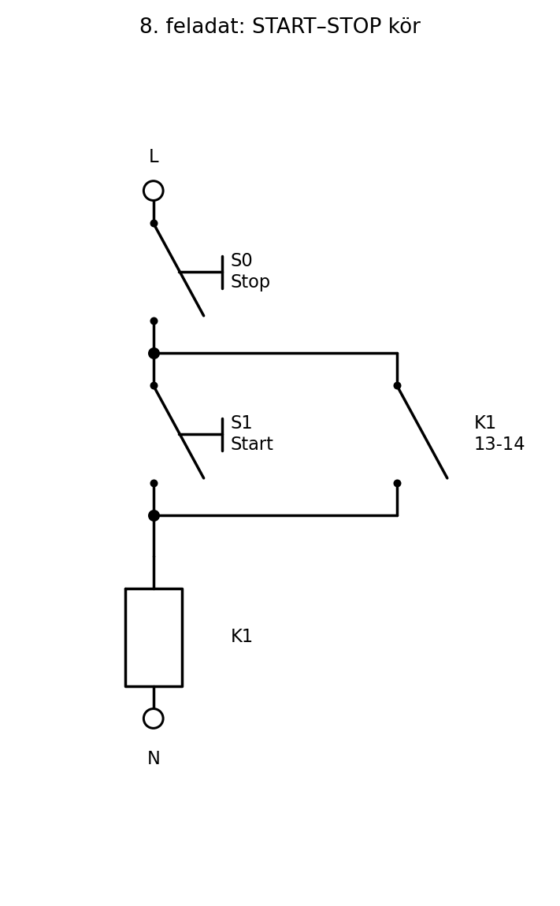
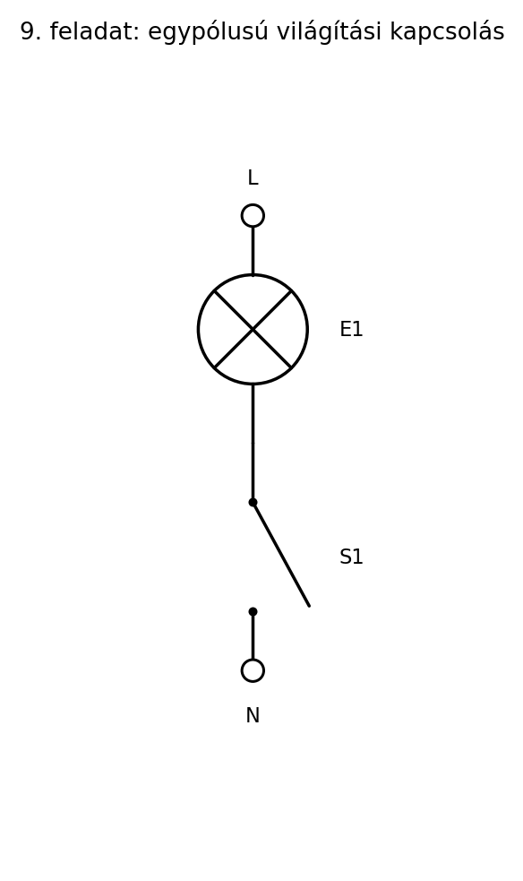
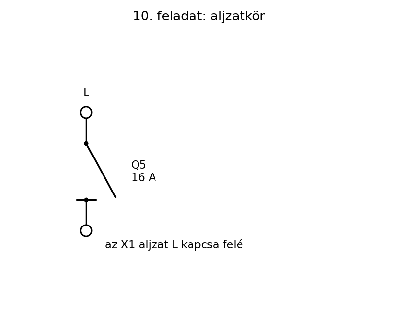
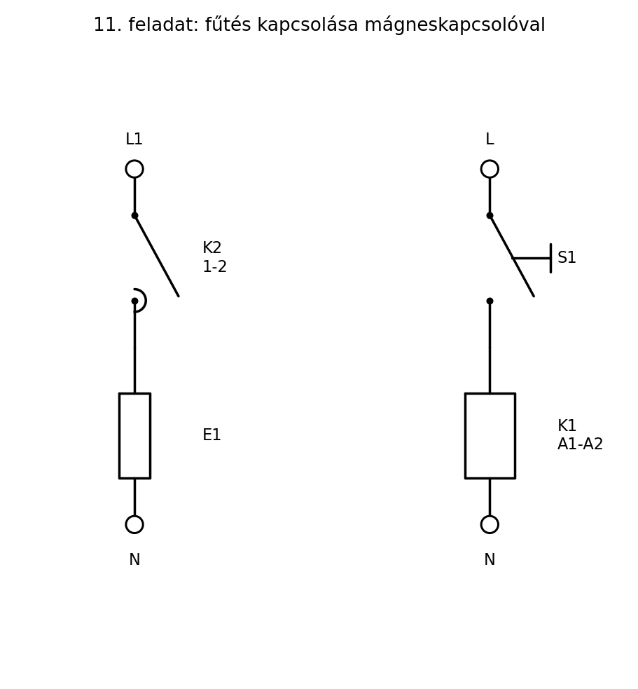
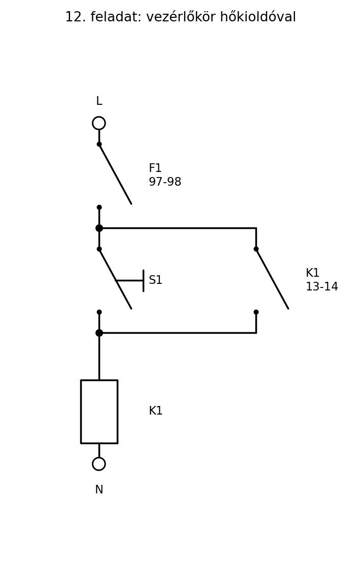
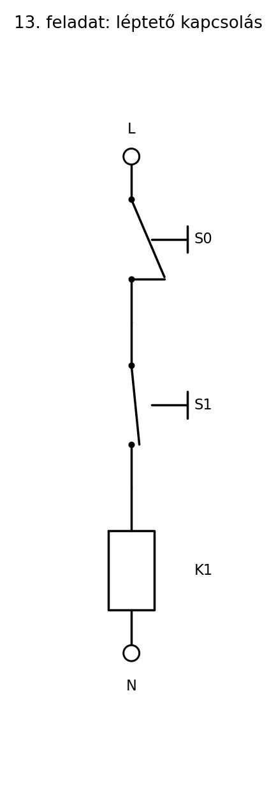
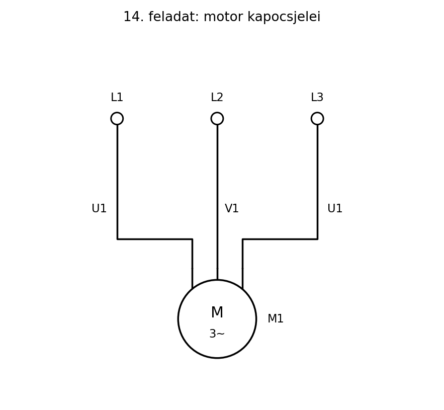

A kapcsolódó elmélet: tankönyv, 12.1 alfejezet.
Cél: Ismerd fel, rajzold le és azonosítsd be a leggyakoribb erősáramú rajzjeleket.
Eszközök és anyagok: Papír, ceruza, radír, vonalzó vagy egy egyszerű rajzolóprogram.
Biztonsági korlát. Ez a feladat rajzolás, tehát gyengeáramú/tanműhelyi környezetre vonatkozik. Hálózati feszültségű munkát csak jogosult, arra képesített személy végezhet. A rajzoló feladathoz nem kell tápfeszültség; ha a kapcsolást ki is próbálod, csak törpefeszültséggel, oktatói felügyelettel.
Gyakorlati recept – A rajzjel megrajzolásának lépései:
Ellenőrzési pont. A kész rajzon nem lehet olyan vonal, amely ne csatlakozna egy készülékhez vagy egy kapocshoz. Ha egy vezeték keresztez egy másikat, de nincs rajtuk kötéspont (dot), akkor az nem érintkezik. Ha T-elágazás van, mindig rajzolj kötéspontot (dot).
Igaz vagy hamis? A Q1 jelölés mindig egy kismegszakítót jelent.
Mi a különbség a Q és az F betűjel között?
Miért fontos, hogy a rajzon a K1 tekercs és a K1 főérintkező ugyanazt a betűjelet viselje?
Rajzold le szavakkal: hogyan néz ki egy záró nyomógomb (NO) jelölése?
Mi a teendő, ha egy régi, ismeretlen rajzjelet találsz?
Mi az a jel, amely egy bontó érintkezőből és a késén ülő késleltetési ívből áll, és K2 a betűjele? Bontsd szét az építőkocka-ábra szerint!
Mit jelent egy alaprajzi nyomvonalon a négy ferde vonás?
(A válaszok a Megoldások alfejezet elején, „Önellenőrzés – válaszok” alcím alatt találhatók.)
1. feladat (A). Sorold fel a Q, F, K, S, H, M, T betűjelek jelentését, és mindegyikhez írj egy-egy konkrét készüléket.
2. feladat (A). Rajzold le papírra a következő jeleket: olvadóbiztosító, lámpa, motor, záró nyomógomb, bontó nyomógomb, transzformátor.
3. feladat (B). Írd le egy kismegszakító (MCB) jelölése és egy olvadóbiztosító (fuse) jelölése közötti legfontosabb vizuális különbséget.
4. feladat (B). A 12.1.2 alszakasz kapcsolási rajzán hol van a vezérlőáramkör? Sorold fel a vezérlőáramkör készülékeit, és indokold, miért nem a főáramkörhöz tartoznak.
5. feladat (C). Egy régi terven egy kapcsoló jelet látsz, mellette „K1” felirattal. A készülék alatt van egy téglalap is, benne „K1” felirattal. A terv szerint a téglalap kapcsai A1 és A2. Mi ez a készülék, és miért van kétszer lerajzolva?
6. feladat (D). Rajzold meg a 12.1.2 alszakasz kapcsolási rajza alapján ugyanazt a kapcsolást, de cseréld ki az F3 kismegszakítót egy sima szakaszoló kapcsolóra, és az F2 olvadóbiztosítót egy 4 A-es (például B4 vagy C4) kismegszakítóra. Írd át a betűjeleket is, és mondd meg, mi hiányzik a csere után a főáramkör védelméből! (A feladatot rajzold le vagy írd le a jelek szöveges elrendezését.)
Minden rajzrészletben pontosan egy hiba van. Feladat mindegyiknél: keresd meg a hibát, nevezd meg, mi történne a megépített kapcsolásban (vagy a kivitelezéskor), és javítsd ki. A rajzok alaphelyzetet mutatnak, hacsak a feladat mást nem mond. Szint: 7–10. feladat A/B, 11–14. feladat B/C.
7. feladat (A). Öntartó indítókapcsolás (L–N vezérlőkör).

8. feladat (A). Indító- és leállítógomb (S0 a STOP).

9. feladat (B). Egy lámpa kapcsolása egy helyről.

10. feladat (B). 16 A-es dugaszolóaljzat-kör az elosztóban; a rajzon más készülék ebben a körben nincs (a FI-védelmet most ne vizsgáld).

11. feladat (B). A leírás szerint a körben egyetlen mágneskapcsoló van: S1 megnyomására ez kapcsolja a fűtőbetétet.

12. feladat (C). Motorindító vezérlőköre hőkioldóval (F1).

13. feladat (B). Léptető (öntartás nélküli) működtetés: K1 csak addig húz, amíg S1-et nyomják.

14. feladat (C). Háromfázisú motor bekötése (a készülékeket elhagytuk).

1. feladat (A). - Q: erősáramú kapcsoló (főkapcsoló Q1, motorvédő kapcsoló Q2, FI, szakaszoló QS). - F: védelem (olvadóbiztosító F2, hőkioldó F1, kismegszakító). - K: relé, mágneskapcsoló (K1, K2). - S: nyomógomb, kapcsoló (S0, S1). - H: jelzőlámpa, hangjelző (H1). - E: világítási lámpa (E1). - M: motor (M1). - T: transzformátor (T1, TA).
2. feladat (A). A jelek leírásai a szövegben találhatók, pl. az olvadóbiztosító egy téglalap, hosszában, a vezeték irányában egy vonallal; a lámpa egy kör, benne X; a motor egy kör, benne M; a záró nyomógomb egy ferde vonallal és szaggatott vonallal kapcsolt működtetővel, a bontó ennek a ferde vonalnak a másik irányú állásával; a transzformátor két egymás melletti tekercsjel.
3. feladat (B). A kismegszakító (MCB) jele egy kapcsoló jele és egy kis túlterhelés/hőkioldó jele kombinációjaként jelenik meg: a záró érintkező mozgó végén × (megszakító), mellette a hő- és elektromágneses kioldó jele. Az olvadóbiztosító jele egyetlen téglalap, benne az olvadó betétet jelző vonallal, nincs külön kapcsolóérintkezője.
4. feladat (B). A vezérlőáramkör a 12.1.2 alszakasz rajzának jobb oldali, L1 és N közötti függőleges áramútja: F2 (4 A-es vezérlőbiztosító), F1 95-96 (a hőkioldó bontó érintkezője), S0 (bontó nyomógomb, Stop), S1 (záró nyomógomb, Start) és vele párhuzamosan K1 13-14 (öntartó segédérintkező), K1 A1-A2 (mágneskapcsoló tekercs), valamint a tekercssel párhuzamos H1 (jelzőlámpa). Ezek a készülékek nem a motort táplálják közvetlenül, hanem a mágneskapcsoló tekercsét vezérlik, hogy a főérintkező zárjon. A motor nagy áramát a főérintkező kapcsolja, míg a vezérlőáramkörben csak a tekercs kis árama folyik.
5. feladat (C). Ez egy mágneskapcsoló. Azért van kétszer lerajzolva, mert az egyik jel (a kapcsoló) a főérintkezőjét, a másik jel (a téglalap A1/A2-vel) a tekercsét ábrázolja. A rajzon ugyanaz a K1 betűjel kapcsolja össze a kettőt, jelezve, hogy ugyanannak a fizikai készüléknek a két, különböző helyen működő része.
6. feladat (D). A főáramkör három ágában az F3 kismegszakító jele helyére a szakaszoló kapcsoló jele kerül (jele: Q1 vagy QS, a kapcsoló jele a × kioldójel nélkül). A vezérlőáramkör tetején az F2 olvadóbiztosító jele helyére a kismegszakító jele kerül (× jellel), 4 A-es felirattal (például C4); betűjele a könyv jelölési rendszerében továbbra is F2 (más terveken Q2). A vezérlőkör védelmének névleges árama nem nőhet: a 4 A-es biztosító helyére 4 A-es kismegszakító kerül, mert a vékony vezérlővezetéket és a segédérintkezőket 16 A-es védelem nem védené (ellenőrizendő: a vezérlővezeték keresztmetszete, a segédérintkezők adatai és a gyártó kínálata). A betűjelek tehát: Q1/QS (szakaszoló), F2 (4 A-es kismegszakító), K1 (mágneskapcsoló), F1 (hőkioldó), S0, S1, H1, M1 (motor). A többi elem és a vezetékezés változatlan. Figyelem. A szakaszolónak nincs zárlatvédelmi kioldója: ebben a formában a motorág zárlat ellen védtelen, így nem üzemeltethető. Ha a Q1 szakaszoló marad, elé (vagy vele egybeépítve) zárlatvédelmet kell tenni, például F3 3×gG olvadóbiztosítót vagy szakaszoló-biztosítót, illetve motorvédő kapcsolót kell alkalmazni (lásd Motorvédő kapcsoló, hőkioldó, megszakító és szakaszoló (tankönyv, 31.3)).
| Feladat | Hiba | Következmény | Javítás |
|---|---|---|---|
| 7. | a felső T-elágazásnál (S0–S1–K1 13-14) nincs kötéspont | a szerelő keresztezésnek olvashatja, a 13-as kapocs bekötetlen marad: K1 csak S1 nyomva tartásáig húz | kötéspont a felső elágazásba |
| 8. | S0 (Stop) záró érintkezőként rajzolva | S1 egyedül nem indít; K1 csak akkor húz meg, ha S0-t is nyomják, és S0 elengedésekor leesik – a „Stop” az indítás feltétele lett | S0 bontó (21-22) nyomógomb |
| 9. | a kapcsoló a nullavezetőben van | a lámpa ki- és bekapcsol, de kikapcsolt állapotban is a foglalaton marad a fázis: izzócserénél áramütés-veszély | S1 a fázisba (L és a lámpa közé), a lámpa másik kapcsa N-re |
| 10. | szakaszolójel a kör egyetlen készüléke | sem túlterhelés, sem zárlat ellen nincs védelem: a vezeték túlmelegedhet, tűzveszély | kismegszakító (F, pl. B16 vagy C16 a méretezés szerint), mellette az előírt FI-védelem (ellenőrizendő: MSZ HD 60364-4-41) |
| 11. | a tekercs K1, a főérintkező K2 | a K2 tekercse nincs a rajzon: a huzalozó nem tudja, melyik készüléken zárjon a főkör; két készülék beépítése esetén a fűtés sosem kapcsol be | a főérintkező betűjele is K1 |
| 12. | a hőkioldó 97-98 záró érintkezője van sorosan a tekerccsel | alaphelyzetben nyitott, ezért a motor el sem indul; kioldás után viszont engedné az indítást | F1 95-96 bontó érintkező a körbe |
| 13. | S1 működtetett (zárt) állapotban van rajzolva, jelölés nélkül | ha a rajz szerint zárt érintkezőt építenek be, K1 a feszültség ráadásakor azonnal behúz | S1-et alaphelyzetben (nyitva) kell rajzolni; működtetett állapot csak külön felirattal ábrázolható |
| 14. | a harmadik kapocs is U1 (kettőzött jel), W1 hiányzik | ha mindkét U1 jelű vezetéket ugyanarra a kapocsra kötik, L1 és L3 között zárlat lesz, W1 bekötetlen marad | a harmadik kivezetés W1 |
A javított kapcsolást üzembe helyezés előtt feszültségmentesen, folytonosságméréssel is ellenőrizd a rajz szerint; feszültség alá csak oktatói felügyelettel kerülhet.
Példa. A fenti ábrán F3 értéke 16 A, kapocsjelölése pólusonként 1/2, 3/4, 5/6 (felül a páratlan, alul a páros szám). K1 tekercsének kapcsai A1 és A2: A1 a felső (ahol a feszültséget kapjuk), A2 az alsó (a nulla felé). A főérintkező kapcsai 1/2, 3/4, 5/6. A segédérintkező 13/14 (záró) vagy 21/22 (bontó). A motor kapcsai U1, V1, W1; így a bekötés egyértelmű.